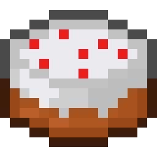
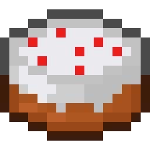

A blocky delight crafted from the finest in-game ingredients! This pixel-perfect Minecraft Cake features fluffy layers of wheat-baked sponge, sweetened with pure cane sugar and enriched with farm-fresh eggs. A creamy milk-infused frosting tops the cake, giving it that iconic white and red pixelated finish. Perfect for restoring hunger points, celebrating your latest diamond find, or just adding a decorative touch to your base. Whether enjoyed slice by slice or devoured in one hearty bite, this cake is the ultimate edible achievement